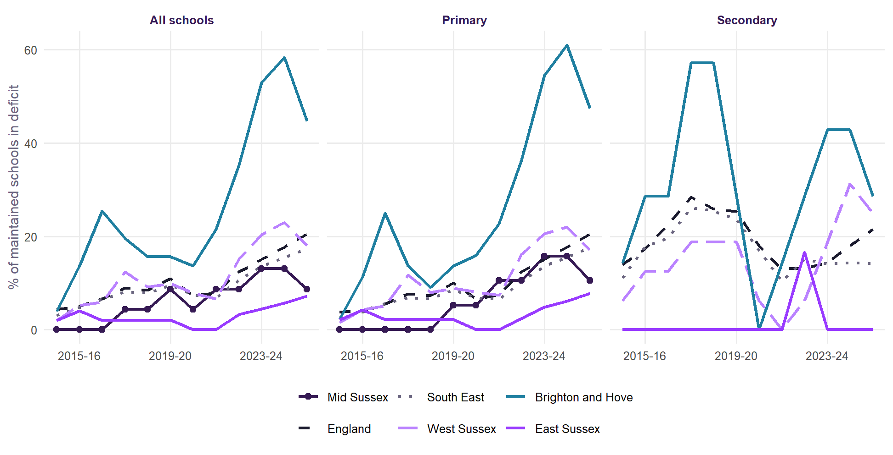
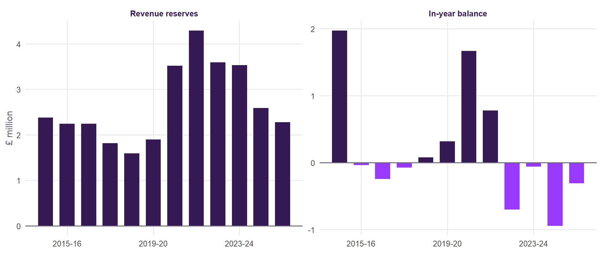
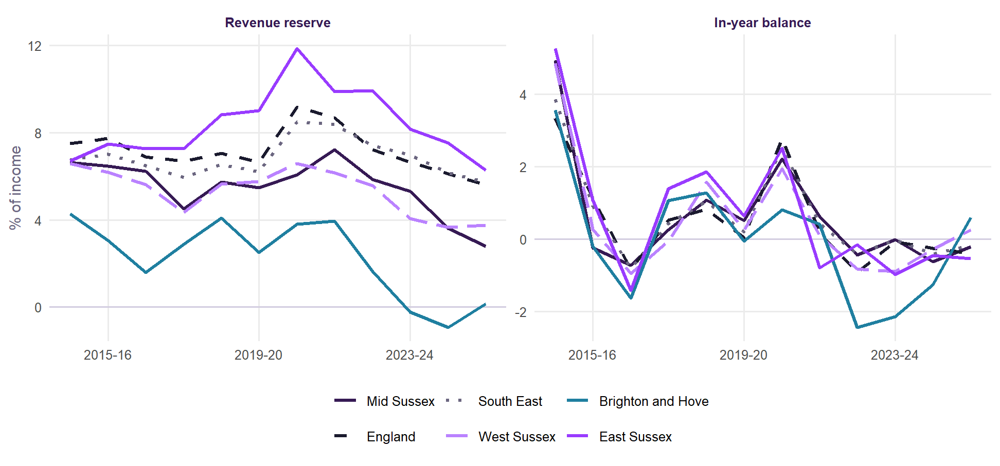
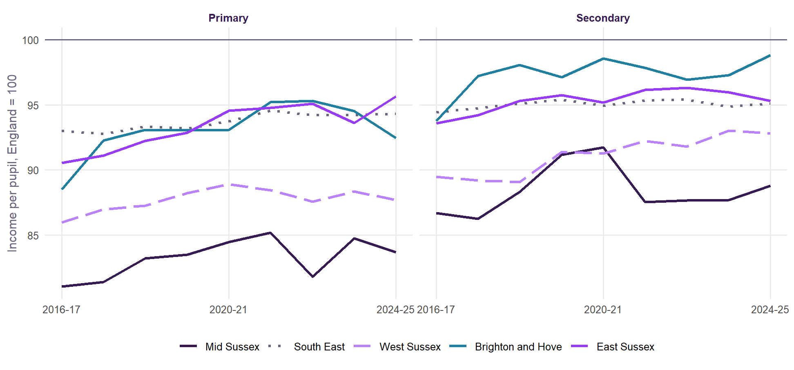
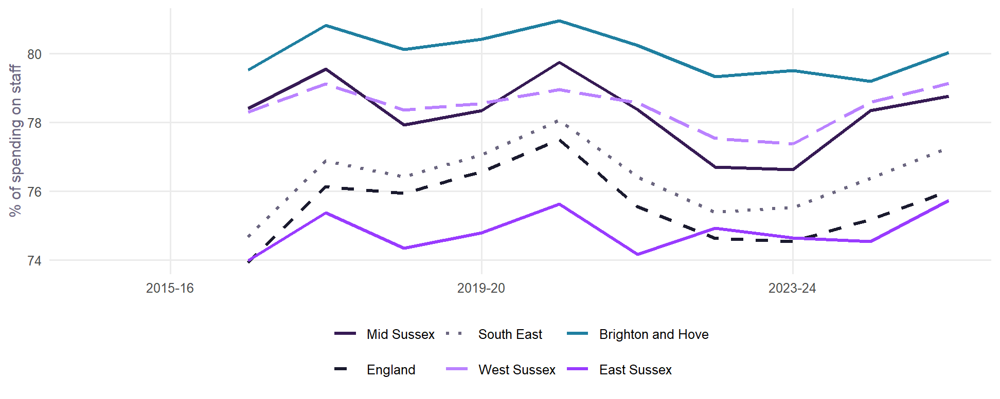

| Phase | Sector | Year | Schools | Pupils | In deficit | Median reserve, % of income | Income per pupil |
|---|---|---|---|---|---|---|---|
| Primary | Maintained | 2025-26 | 19 | 4,304 | 11% | 3.3 | £6,587 |
| Secondary | Maintained | 2025-26 | 4 | – | – | – | – |
| Primary | Academy | 2024-25 | 22 | 7,524 | see note | see note | £5,977 |
| Secondary | Academy | 2024-25 | 3 | – | – | – | – |
Mid Sussex: school finances
Reserves, in-year balances, income and the spread of schools’ finances in Mid Sussex’s state primary and secondary schools, against England, the region and the rest of Sussex.
NoteIn short
- 9% of Mid Sussex’s 23 maintained schools were in deficit (a negative revenue reserve) in 2025-26, against 21% across England and 17% in the South East. That is the 7th highest of 11 Sussex districts with at least five maintained schools. The peak was 13% in 2023-24, against 15% in England.
- Together, its maintained schools hold net reserves of £2.3m, against net reserves of £4.3m in 2021-22. The typical maintained school’s reserve is 2.8% of a year’s income (England 5.6%).
- 53% of pupils are in academies (2024-25), against 66% across England.
- Income per pupil in its schools was 86% of England’s in 2024-25 (all state mainstream schools).
These pages describe Mid Sussex’s schools as a whole, from DfE’s published finance returns. As on School finances before closure, no open school is named. Maintained schools report every year from 2014-15 to 2025-26 (Consistent Financial Reporting, April to March); academies from 2016-17 to 2024-25 (Academy Accounts Returns, September to August). An academy in a multi-academy trust reports only its own share of reserves, without the trust’s central reserve, and some trusts report none (nearly a third of academy returns show a reserve of exactly zero), so the reserve series below are for maintained schools unless marked. A share, median or line needs at least five schools behind it, so phases and years with fewer are left out.
Schools in deficit


How much they hold

| Reserve, % of income | Primary schools | England primary | Secondary schools | England secondary |
|---|---|---|---|---|
| Below -10% | 0 | 6% | – | 7% |
| -10% to -5% | 2 | 4% | – | 5% |
| -5% to 0% | 0 | 10% | – | 10% |
| 0% to 5% | 8 | 26% | – | 31% |
| 5% to 10% | 7 | 27% | – | 25% |
| 10% to 20% | 1 | 21% | – | 17% |
| Over 20% | 1 | 6% | – | 6% |
Income and spending


Across Sussex
| District | Authority | Schools | Pupils in academies | Maintained schools | In deficit | Median reserve | Income per pupil, England = 100 | In warning band | Three or more signs |
|---|---|---|---|---|---|---|---|---|---|
| Brighton and Hove | Brighton and Hove | 58 | 17% | 47 | 45% | 0.2% | 95 | 8 | 5 |
| Eastbourne | East Sussex | 25 | 88% | 4 | – | – | 94 | 0 | 1 |
| Hastings | East Sussex | 21 | 96% | 1 | – | – | 100 | 0 | 0 |
| Lewes | East Sussex | 28 | 51% | 15 | 7% | 5.8% | 98 | 1 | 1 |
| Rother | East Sussex | 37 | 58% | 24 | 8% | 6.3% | 93 | 1 | 2 |
| Wealden | East Sussex | 55 | 34% | 39 | 3% | 7.0% | 93 | 5 | 4 |
| Adur | West Sussex | 14 | 76% | 5 | 60% | -3.9% | 91 | 0 | 0 |
| Arun | West Sussex | 41 | 60% | 21 | 14% | 3.3% | 91 | 0 | 0 |
| Chichester | West Sussex | 53 | 60% | 34 | 29% | 4.3% | 94 | 1 | 4 |
| Crawley | West Sussex | 32 | 60% | 13 | 8% | 2.6% | 94 | 0 | 0 |
| Horsham | West Sussex | 50 | 36% | 38 | 16% | 4.0% | 90 | 3 | 6 |
| Mid Sussex | West Sussex | 48 | 53% | 23 | 9% | 2.8% | 86 | 1 | 1 |
| Worthing | West Sussex | 28 | 40% | 16 | 12% | 5.2% | 86 | 0 | 1 |
Each school is placed in a district by its location. In most districts the maintained schools are a minority, so the academy column shows how much of the picture the reserve figures cover: in a district where most pupils are in academies, the maintained schools that remain are often the smaller ones. Brighton and Hove is both a district and an authority.
Warning signs
Of Mid Sussex’s 48 open schools with a recent return (maintained and academies), 1 (2%) is in the band that held the riskiest 2% of school-years nationally since 2017-18, on the early-warning model, and 1 shows three or more of the five warning signs (England: 4.5% in that band). These are counts, not a list: a warning is a reason for a conversation about a school’s future, not a forecast, and no school is named.
Data and notes
DfE’s Financial Benchmarking and Insights Tool files, as on School finances before closure: Consistent Financial Reporting for maintained schools (financial years 2014-15 to 2025-26) and Academy Accounts Returns for academies (2016-17 to 2024-25), for state mainstream primary, middle, secondary and all-through schools. A school is in deficit when its revenue reserve at year end is below zero; the in-year balance is total income less total expenditure. Sums are over the schools with a return that year; medians and shares are of schools, not pupils. Income per pupil is the area’s total income over its total pupils (full-time equivalent). Figures are in cash terms; comparing with England each year removes inflation. Shares, medians and lines need at least five schools behind them. Schools are placed in a Sussex district by their location (GIAS easting and northing, nearest ONS district boundary); the district warning-sign counts come from the same open-school list as the authority counts, counted by district. Built by R/44_area_finance.R (data/area_finance.rds) and R/45_finance_pages.R.